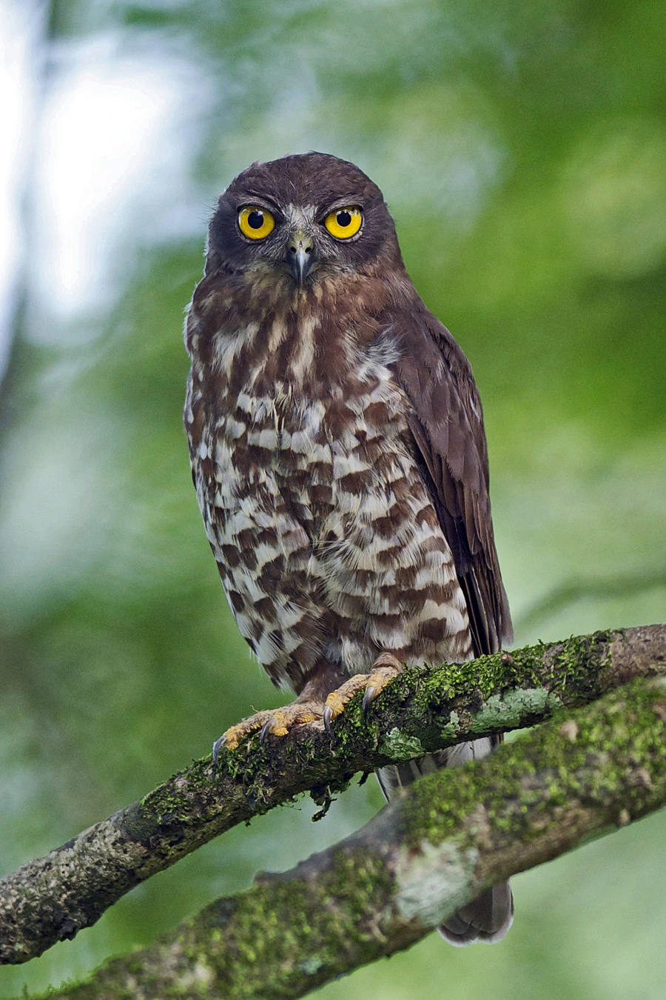

鸟类 · 动物界
鹰鸮 Ninox scutulata

外形似鹰的夜行猛禽，头圆无耳羽，眼睛金黄，上体深褐、下体具粗著纵纹。黄昏时在林地边缘快速飞行捕虫，鸣声圆润低沉。
- 分类
- 门脊索动物门纲鸟纲目鸮形目科鸱鸮科属鹰鸮属
- 栖息环境
- 低山常绿阔叶林、混交林、竹林、果园、公园与村落附近的高大树木。
- 地理分布
- 南亚、东南亚至中国东部、南部及台湾；北方种群冬季南迁。
- 保护级别
- IUCN 红色名录列为无危（LC）；中国国家二级保护野生动物，列入 CITES 附录二。
物种志
鹰鸮体长约二十七至三十三厘米，体重一百五十至二百七十克。头部圆形，没有明显的面盘和耳羽簇，外形更像小型鹰类。上体深褐色，肩部有白色斑点；下体乳白至淡黄，胸腹部密布粗著的褐色纵纹。虹膜金黄色，嘴灰黑，脚黄色。飞行时双翼较尖，尾羽较长，动作轻快灵活。
它栖息于低山常绿阔叶林、混交林、竹林、果园与公园，夜间和黄昏活动，常在林缘或树冠层快速穿梭，捕食蛾类、甲虫等昆虫，也猎食小鼠、蛙与小鸟。繁殖期在树洞中营巢，每窝产卵二至三枚。鸣声为圆润的“不—不—”双音节，繁殖季夜间频繁鸣叫。鹰鸮分布于南亚、东南亚至中国东部和南部，北方种群有迁徙行为，是中国南方林地常见的猫头鹰之一。
形态与习性
- 体长27–33 厘米
- 体重150–270 克
- 食性昆虫为主，兼食小鼠、蛙与小鸟
- 繁殖树洞营巢，每窝 2–3 枚
- 鸣声圆润低沉的“不—不—”双音节
- 保护级别国家二级；CITES 附录二
趣味知识
- 没有猫头鹰典型的圆面盘，轮廓更像小型鹰。
- 黄昏时在树冠间高速穿梭，捕虫动作似雨燕。
- 金黄的眼睛在灯光下会反射出明亮光点。